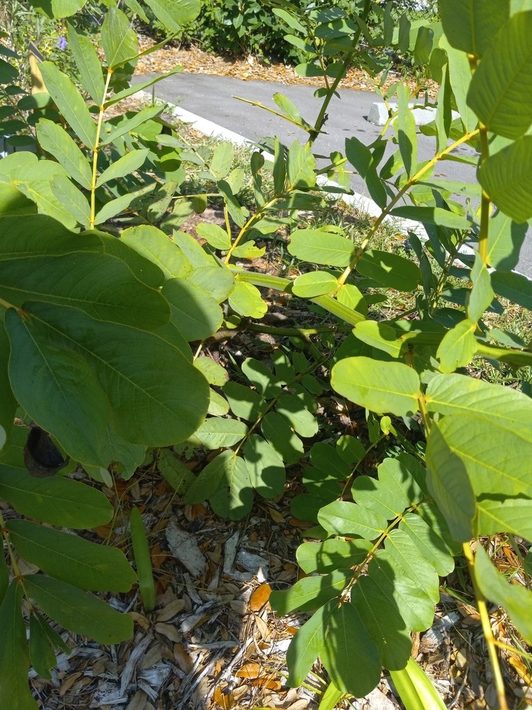

- The large yellow flower clusters and bold compound leaves make this one of the more visually assertive shrubs in the collection — hard to walk past without noticing.
- A member of the senna family (Fabaceae/Cassieae) and closely related to the Golden Shower Tree. The pods are large, four-winged, and distinctive.
- The leaves and seeds are toxic. Historically used as a medicinal plant throughout its native range in tropical America, with particular use as an antifungal skin treatment — the leaves were rubbed on ringworm infections, which is why it is also called Ringworm Bush.
- FISC Category I invasive in Florida — Florida's highest invasive designation. Self-seeds freely and establishes in disturbed areas.
Non-native. Native to tropical America from Mexico south through Central and South America. Widely naturalized throughout the tropics. Member of Fabaceae — the legume family.
- Candelabra Bush is named for its flower spikes: stiff, upright spikes of bright yellow buds that open from the bottom up, standing above the foliage like rows of golden candles - the source of its other names, Emperor's Candlesticks and Christmas Candle. The bold, ladder-like compound leaves fold closed at night.
- Its oldest common name, Ringworm Bush, points to a long history in folk medicine: a crushed-leaf paste has been used across the tropics against ringworm and other fungal skin conditions, and the plant does contain compounds with documented antifungal activity. It is not, however, a plant to eat - the leaves and seeds contain anthraquinone glycosides and act as a strong laxative.
- It is a fast, short-lived tropical shrub from the Americas, now naturalized worldwide. In Florida it is a FISC Category I invasive — the state's highest designation — that self-seeds freely, so it is never one to plant near natural areas.
Bees and butterflies visit the flowers. Sulfur butterflies in particular are associated with senna species as larval host plants — the Cloudless Sulphur and Orange-barred Sulphur both use Senna species.
The large pods and seeds are eaten by some birds and parrots.
Bright yellow, five petals, in upright racemes at branch tips. Showy. Bloom over an extended season.
Large, four-winged, distinctive — unlike most legume pods. Mature to brown and persist on the plant.
Large, pinnately compound with 8 to 14 pairs of leaflets. Bold texture.
Fast-growing shrub or small tree, 6 to 12 feet. Often multi-stemmed.
The four-winged seed pods are distinctive and a reliable ID feature. The upright yellow flower clusters and large compound leaves are the visual signature when in bloom.
Do not eat any part of this plant. The leaves and seeds contain anthraquinone glycosides and are toxic if swallowed.
It's toxic to dogs as well, with the anthraquinones causing vomiting and diarrhea. Keep pets away from the seeds and foliage.
The Candelabra Bush recorded at Palma Sola grew near the front gate, where all park observations date to 2024 and earlier. As a FISC Category I invasive it was targeted for removal — a stubborn one to clear — and as of 2025 we believe it has been fully taken out. A related Christmas senna still grows in the park's butterfly garden, where it makes a far better-behaved garden plant.


- © teschaim (CC-BY-NC), via iNaturalist
- © nellmcphillips (CC-BY-NC), via iNaturalist